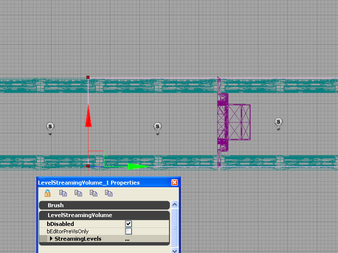

UDN
Search public documentation:
LevelStreamingVolumesJP
English Translation
中国翻译
한국어
Interested in the Unreal Engine?
Visit the Unreal Technology site.
Looking for jobs and company info?
Check out the Epic games site.
Questions about support via UDN?
Contact the UDN Staff
中国翻译
한국어
Interested in the Unreal Engine?
Visit the Unreal Technology site.
Looking for jobs and company info?
Check out the Epic games site.
Questions about support via UDN?
Contact the UDN Staff
UE3 ホーム > レベルストリーミング > Level Streaming Volumes
Level Streaming Volumes
概要
- ゲーム 中では、LevelStreamingVolumeにより、プレーヤーがボリュームの内側にいるときにレベルがロードされ、ボリュームの外側にいるときにレベルがアンロードされます。
- エディタ の中では、LevelStreamingVolumeにより、パースペクティブ ビューポートのカメラの位置に基づいて、自動的にレベルを隠したり表示したりすることにより、レベル ストリーミングのプレビューを表示することができます。
ストリーミング ボリュームをレベルに関連付ける
- LevelStreamingVolumeをPersistent レベルに追加します(他のボリュームと同様、エディタのメイン ツールバーの "Add Volume" (ボリュームを追加) ボタンを利用)
- ボリュームに関連付けるレベルを、レベル ブラウザの中で選択して右クリックし、レベル ブラウザのコンテキスト メニューを呼び出して "Add Streaming Volumes" (ストリーミング ボリュームを追加) を選択します。

- Add Streaming Volumes: レベルにボリュームを追加します。既存の関連付けはすべて維持されます。
- Set Streaming Volumes: 選択したボリュームだけをレベルのボリュームに設定します。既存の関連付けはすべて放棄します。
- Clear Streaming Volumes: 選択したレベルとストリーミング ボリュームとの関連付けをすべて削除します。
- Select Associated Streaming Volumes: 選択したレベルに関連付けられたボリュームをすべて選択します。
重要な詳細
- LevelStreamingVolumeは、すべて、Persistent レベルの中にある必要があります。それ以外のレベルにあるLevelStreamingVolumeは、レベル ストリーミングに利用することはできず、マップに対するエラーのチェックを行うと、警告が生成されます。
- ボリューム ベースのレベル ストリーミングを利用できるのは、Kismet ストリーミング方式を使ったワールドに追加されたレベルだけです。
- レベルに何らかのストリーミング ボリュームが関連付けられている場合、そのレベルに対する他のストリーミング方式(距離ストリーミングや Kismet ストリーミングなど)は正しく動作しません。
- 単一のLevelStreamingVolumeが、複数のレベルに影響を与えることが可能です。同様に、単一のレベルが、複数のLevelStreamingVolumeの影響を受けることも可能です。
- ボリューム ベースのストリーミングは、分割画面でも動作します。ロード/アンロードのリクエストが発行されるときには、ローカルなプレーヤー全員の視点が考慮されます。
ストリーミング ボリューム設定のテスト
Previs 用のLevelStreamingVolume
 ボリューム ベースのレベル ストリーミングは、パースペクティブ ビューポート ツールバー上の [Previs 用のLevelStreamingVolume] （Level Streaming Volume Previs） ボタンを有効にすれば、簡単にプレビューすることができます。このモードを有効にすると、レベルはパースペクティブ ビューポート カメラの位置に基いて非表示/再表示されます。この非表示/再表示は、レベル ブラウザ中に表示されるレベルのセットに影響することに注意してください。
LevelStreamingVolumeは、bEditorPreVisOnly フラグを設定することによってのみ、エディタ Previs 用にマークすることができます。このようにすれば、ゲーム中のストリーミングには別のストリーミング方式を利用していても、エディタ Previs にはボリューム ベースのレベル ストリーミングを利用することができます。
ボリューム ベースのレベル ストリーミングは、パースペクティブ ビューポート ツールバー上の [Previs 用のLevelStreamingVolume] （Level Streaming Volume Previs） ボタンを有効にすれば、簡単にプレビューすることができます。このモードを有効にすると、レベルはパースペクティブ ビューポート カメラの位置に基いて非表示/再表示されます。この非表示/再表示は、レベル ブラウザ中に表示されるレベルのセットに影響することに注意してください。
LevelStreamingVolumeは、bEditorPreVisOnly フラグを設定することによってのみ、エディタ Previs 用にマークすることができます。このようにすれば、ゲーム中のストリーミングには別のストリーミング方式を利用していても、エディタ Previs にはボリューム ベースのレベル ストリーミングを利用することができます。
LevelStreamingVolumeのコスト
アンロード リクエスト履歴の追加
LevelStreamingVolumeを無効にする

上の画像では、プレーヤーは左から接近し、ストリーミングすべきレベルは、ドアの右側になります。ストリーミング ボリュームは、ドアを越えてその左側にまで広がっているので、プレーヤーがドアに到達してドアを開けることができる状態になったときには、対応するレベルがストリーミングされるはずです。けれども、このドアは初期設定では鍵がかかっていて、プレーヤーがマップの別のところで目標を達成した時点で鍵が開くようになっています。したがって、ストリーミング ボリュームがドアを越えて広がっていたとしても、ドアの鍵が開く(開けることが可能になる)までは、ドアの向こう側のレベルはロードしないことが望ましいのです。 これを実現する方法は、エディタの中ではLevelStreamingVolumeを bDisabled にマークし、目標が達成された時点で、Kismet のトグル アクションを使って bDisabled を FALSE に設定することです。これにより、LevelStreamingVolumeは「オン」になり、プレーヤーがドアに接近したときにはレベルがストリーミングされるようになります。